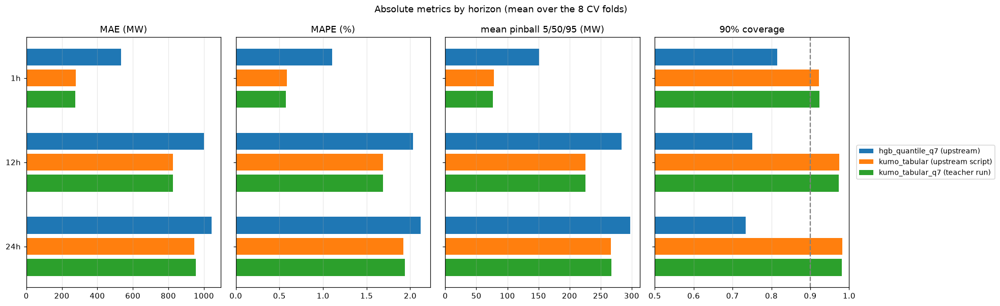
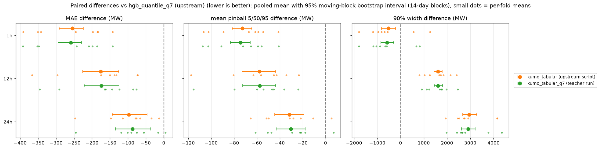
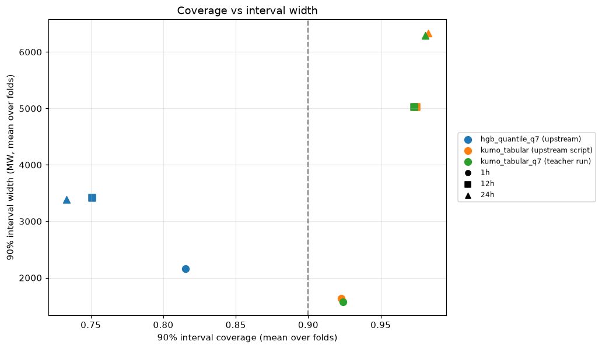
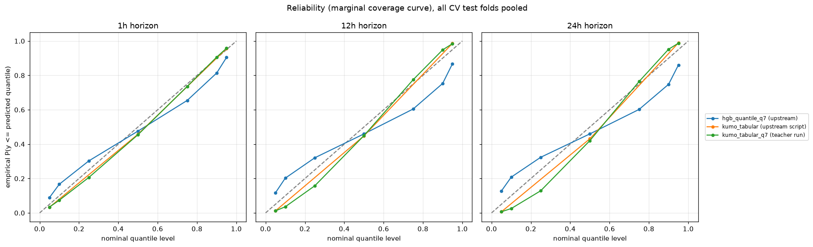
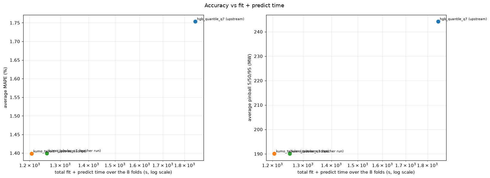
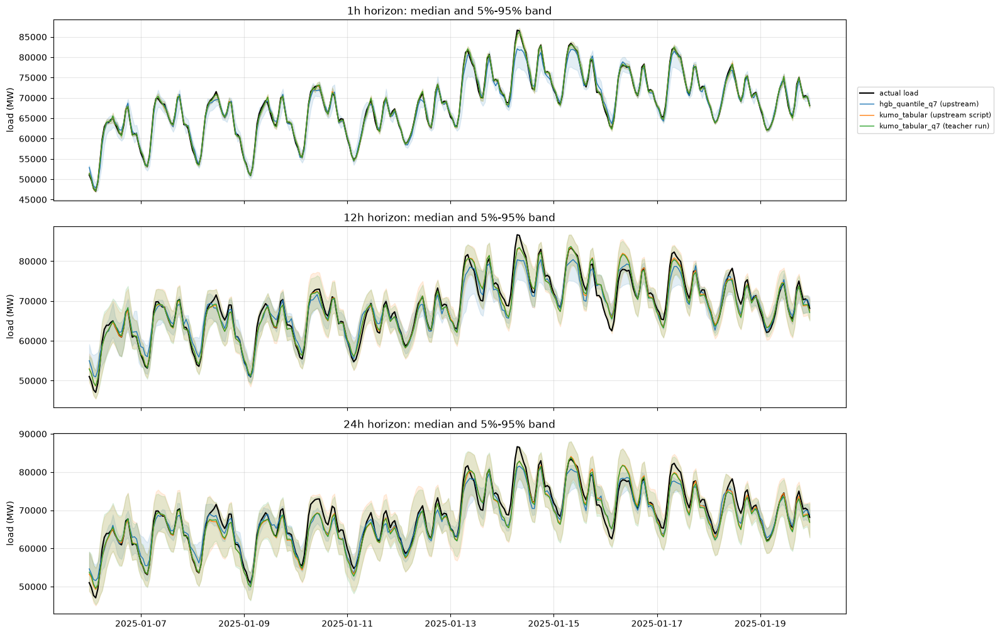

01: Reproduction of kumo_tabular and hgb_quantile_q7
Goal: re-run the two models of the latest skore-example-electricity-load report (walk-forward CV with forecast weather, 8 folds of 13 weeks, horizons 1h / 12h / 24h) on the AWS L4 machine and check that the numbers match.
Setup
Upstream code:
probabl-ai/skore-example-electricity-loadat2ef9e1cab09505e979e30eef90977c6ec7d736d1("add tabicl forecast", latest commit, 2026-11-05), installed editable in the pixi environment of this experiment (kumo_distillation/pixi.toml, Python 3.12, scikit-learn 1.9.1, skrub 0.11.0, polars 1.44.2, torch 2.15.0+cu132,structured-data-modelsat the upstream-pinned commit78130b67, Kumo-Tabularlargeweightsnvidia/Kumo-Tabularrevisionv1.0.1).hgb_quantile_q7: upstream script, run on a 4-vCPU Intel Xeon VM:python upstream/scripts/model_comparison/cross_validate_models.py \ --model hgb_quantile --quantiles 0.05 0.1 0.25 0.5 0.75 0.9 0.95 --tag q7 \ --output_dir results/raw/reproductionkumo_tabular: upstream script, run on the AWS g6 machine (NVIDIA L4 24 GB, 4-vCPU AMD EPYC 7R13, 15 GB RAM), with the 3 default quantiles and the full training history as context, as in the published run:python upstream/scripts/model_comparison/cross_validate_models.py \ --model kumo_tabular --max_train_rows 0 --output_dir results/raw/reproductionkumo_tabular_q7: the same model (8 estimators, float16 autocast, full training set as context) called through Kumo-Tabular's cachedfit/predictAPI byscripts/gen_teacher.py, for the 7 quantile levels ofhgb_quantile_q7. These are the test predictions of the teacher used in the next iterations. Kumo-Tabular's ensemble members use unseeded random preprocessing upstream, so two runs differ slightly (mean absolute difference of the 1h medians between the two call paths: 27 MW on the last fold).
scripts/check_folds.py checks that the per-fold feature matrices built by scripts/folds.py (used by all the later iterations) give exactly the same HGB predictions as the upstream skrub DataOp on folds 0 and 7 (max abs difference 0).
Results
Pooled over the 8 CV folds (17,466 test rows per horizon). Upstream metric code (compare_predictions.compute_scores); "pinball 5/50/95" is the mean pinball loss over these 3 levels and horizons, "pinball q7" over the 7 levels.
| model | MAE avg | MAE 1h | MAE 12h | MAE 24h | MAPE avg (%) | pinball 5/50/95 avg | pinball q7 avg | d2 pinball avg | cov 90 avg | width 90 avg | cov 50 avg | fit+predict (s) |
|---|---|---|---|---|---|---|---|---|---|---|---|---|
| hgb_quantile_q7 (upstream) | 859 | 534 | 1001 | 1042 | 1.75 | 244 | 278 | 0.8595 | 0.766 | 2987 | 0.305 | 1851 |
| kumo_tabular (upstream script) | 683 | 279 | 825 | 945 | 1.40 | 190 | - | 0.8916 | 0.960 | 4333 | - | 1206 |
| kumo_tabular_q7 (teacher run) | 686 | 275 | 827 | 955 | 1.40 | 190 | 213 | 0.8918 | 0.959 | 4298 | 0.594 | 1255 |
Published values (same metrics, from the upstream report):
| model | MAE avg | MAE 1h | MAE 12h | MAE 24h | MAPE avg (%) | d2 pinball q0.05 / q0.5 / q0.95 | cov 90 avg | width 90 avg |
|---|---|---|---|---|---|---|---|---|
| hgb_quantile_q7 (published) | 859.0 | 533.8 | 1001 | 1042 | 1.753 | 0.8179 / 0.8931 / 0.8674 | 0.7665 | 2987 |
| kumo_tabular (published) | 688.4 | 276.4 | 826.2 | 962.7 | 1.405 | 0.8526 / 0.9144 / 0.9075 | 0.9605 | 4313 |
| hgb_quantile_q7 (this run) | 859.0 | 533.8 | 1001.0 | 1042.4 | 1.753 | 0.8179 / 0.8931 / 0.8674 | 0.7665 | 2987 |
| kumo_tabular (this run) | 683.0 | 278.8 | 825.0 | 945.2 | 1.398 | 0.8531 / 0.9150 / 0.9066 | 0.9604 | 4333 |
hgb_quantile_q7is reproduced exactly (deterministic CPU model, same data and code).kumo_tabularis reproduced within the run-to-run noise of its random ensemble preprocessing: average MAE 683 MW vs 688 MW published, same coverage and pinball-d2 to 3 decimals. The cached call path (kumo_tabular_q7) gives the same numbers (686 MW).- Kumo-Tabular is 20% better than
hgb_quantile_q7in MAE, twice better at 1h, and its 90% intervals over-cover (0.96) while HGB's under-cover (0.77). - Cost: 1,206 s of fit + predict for
kumo_tabularon the L4 for the 8 folds (context encoding dominates), 1,851 s of CPU fit forhgb_quantile_q7on 4 vCPUs.





